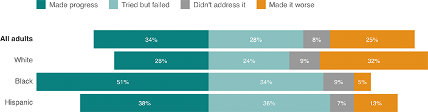

In a recent poll, 51 percent of black adults said that President Obama has helped improve race relations — while nearly a third of white adults said he’s made things worse

Notes
“All adults” include respondents of all races. “White” and “black” tallies are non-Hispanic only. “Don’t Know/Refused” responses have been omitted.